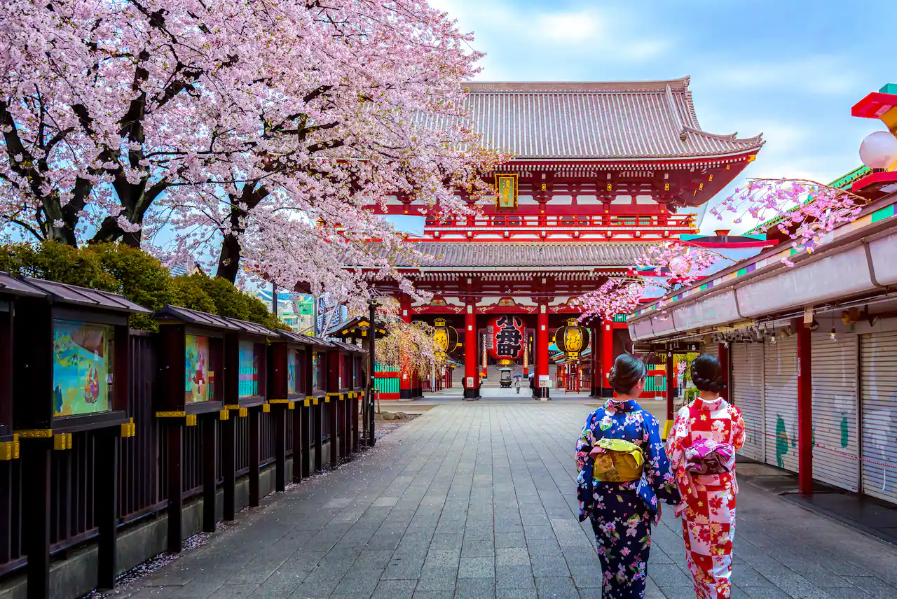

WELCOME TO TOKYO
Токио - город, который никогда не спит. Это перекресток традиций и современных технологий, где небоскребы соседствуют с древними храмами, а уличные торговцы предлагают как свежайшие суши, так и последнюю модель смартфона.

Наши достопримечательности!

Токийский национальный музей
Историю и культуру эпохи Эдо можно наглядно проследить в районах Уэно и Асакуса. Просторный парк Уэно – это прекрасное место, где можно не только отдохнуть, но и посетить множество различных музеев и галерей. Прямо от станции "Уэно" начинается знаменитая торговая улица Амейоко, на которой магазины одежды теснятся по соседству с бесчисленными рыбными и бакалейными лавками.